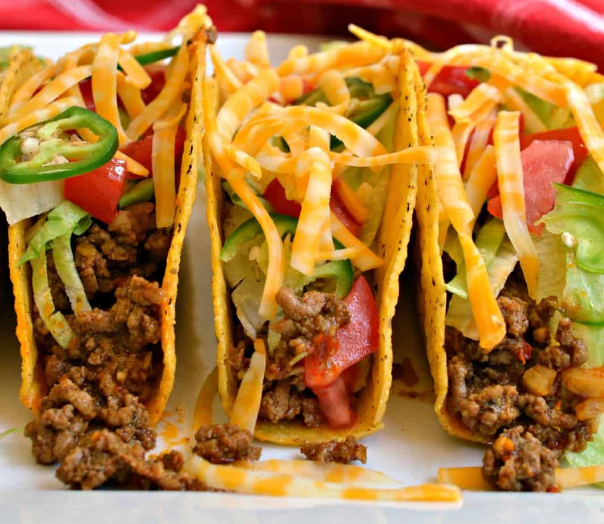

Tacos

Description
We have here a typical American all beef Taco. It is the old fashion and time tested recipe of corn tortillas, salsa, ground beef, cheese and lettuce. Other toppings are optional and you can have this whipped up in no time.
Ingredients
- 1 pound lean ground beef (at least 80%)
- cup of chunky salsa
- 10 taco shells
- 1/2 head of lettuce shredded
- 1 medium tomato chopped
- 1 cup shredded chedder cheese
- 1-2 jalapeno chopped into slices
Steps
-
Cook beef in 10-inch skillet over medium heat 8 to 10 minutes, stirring occasionally, until brown; drain.
-
Stir salsa into beef. Heat to boiling, stirring constantly; reduce heat to medium-low. Cook 5 minutes, stirring occasionally. Pour beef mixture into large serving bowl.
-
Heat taco shells as directed on package. Serve taco shells with beef mixture, lettuce, tomato and cheese.